library(tidymodels)## ── Attaching packages ────────────────────────────────────── tidymodels 0.1.3 ──## ✓ broom 0.7.6 ✓ recipes 0.1.16
## ✓ dials 0.0.9 ✓ rsample 0.1.0
## ✓ dplyr 1.0.6 ✓ tibble 3.1.2
## ✓ ggplot2 3.3.3 ✓ tidyr 1.1.3
## ✓ infer 0.5.4 ✓ tune 0.1.5
## ✓ modeldata 0.1.0 ✓ workflows 0.2.2
## ✓ parsnip 0.1.5 ✓ workflowsets 0.0.2
## ✓ purrr 0.3.4 ✓ yardstick 0.0.8## ── Conflicts ───────────────────────────────────────── tidymodels_conflicts() ──
## x purrr::discard() masks scales::discard()
## x dplyr::filter() masks stats::filter()
## x dplyr::lag() masks stats::lag()
## x recipes::step() masks stats::step()
## • Use tidymodels_prefer() to resolve common conflicts.library(tidyverse)## ── Attaching packages ─────────────────────────────────────── tidyverse 1.3.1 ──## ✓ readr 1.4.0 ✓ forcats 0.5.1
## ✓ stringr 1.4.0## ── Conflicts ────────────────────────────────────────── tidyverse_conflicts() ──
## x readr::col_factor() masks scales::col_factor()
## x purrr::discard() masks scales::discard()
## x dplyr::filter() masks stats::filter()
## x stringr::fixed() masks recipes::fixed()
## x dplyr::lag() masks stats::lag()
## x readr::spec() masks yardstick::spec()library(magrittr)##
## Attaching package: 'magrittr'## The following object is masked from 'package:tidyr':
##
## extract## The following object is masked from 'package:purrr':
##
## set_nameslibrary(skimr)
library(knitr)입력 변수의 수를 줄였을때의 장점
- 잡음(noise)를 제거해 모형의 정확도를 개선함
- 모형의 연산 속도가 빨라짐
- 다중공선성의 문제를 제거해 모형의 해석 능력을 향상시킴
ex) 나이, 생년은 같은 의미를 갖기 때문에 하나를 제거함
- 계수축소법에는 Ridge와 LASSO, Elastic Net이 있음
L2 norm(제곱합) 으로 표현
λ가 클수록 β값들이 0으로 수렴
f(β;x,y) = (Y-Xβ)^T * (Y-Xβ) + λ*β^T * I * β
(단, X = 1더해진 x메트릭스)
hat β(Ridge) = (X^T * X + λ*I)^{-1} * X^T * Y
(Least Absolute Shrinkage and Selection Operator)
L1 norm(절대값 합) 으로 표현
λ가 클수록 β값들이 0이 됨
f(β;x,y) = (Y-Xβ)^T * (Y-Xβ) + λ*│β│
hat β(LASSO) 수식으로 구하기 어려움
knitr::include_graphics("lec6-1.png")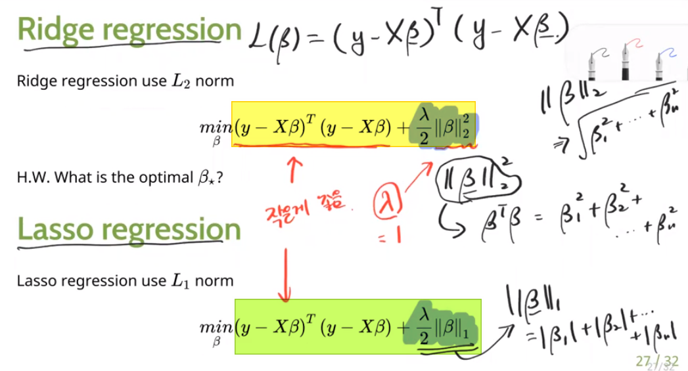
knitr::include_graphics("lec6-2.png")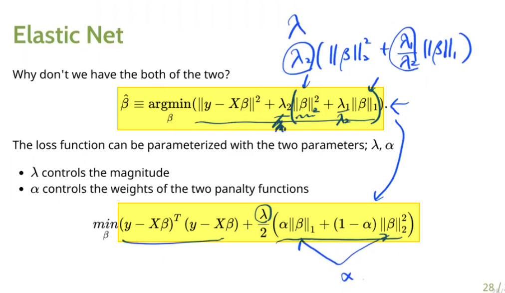
X <- as.matrix(mtcars[,2:10])
X <- cbind(1, X)
Y <- mtcars[,1]
beta <- solve(t(X) %*% X) %*% t(X) %*% Y
beta ## [,1]
## 12.83083549
## cyl -0.16881263
## disp 0.01623358
## hp -0.02424055
## drat 0.70590083
## wt -4.03214213
## qsec 0.86828517
## vs 0.36470431
## am 2.55092849
## gear 0.50293618lambda <- 0
beta_r0 <- solve(t(X) %*% X + lambda*diag(ncol(X))) %*% t(X) %*% Y
beta_r0## [,1]
## 12.83083549
## cyl -0.16881263
## disp 0.01623358
## hp -0.02424055
## drat 0.70590083
## wt -4.03214213
## qsec 0.86828517
## vs 0.36470431
## am 2.55092849
## gear 0.50293618lambda <- 0.5
beta_r0.5 <- solve(t(X) %*% X + lambda*diag(ncol(X))) %*% t(X) %*% Y
lambda <- 1
beta_r1 <- solve(t(X) %*% X + lambda*diag(ncol(X))) %*% t(X) %*% Y
lambda <- 10
beta_r10 <- solve(t(X) %*% X + lambda*diag(ncol(X))) %*% t(X) %*% Y
lambda <- 100
beta_r100 <- solve(t(X) %*% X + lambda*diag(ncol(X))) %*% t(X) %*% Y
lambda <- 1000
beta_r1000 <- solve(t(X) %*% X + lambda*diag(ncol(X))) %*% t(X) %*% Y
lambda <- 10000
beta_r10000 <- solve(t(X) %*% X + lambda*diag(ncol(X))) %*% t(X) %*% Y
beta_set <- cbind(beta_r0, beta_r0.5, beta_r1, beta_r10, beta_r100, beta_r1000, beta_r10000)
beta_set## [,1] [,2] [,3] [,4] [,5] [,6]
## 12.83083549 0.74307514 0.49494882 0.198919357 0.088735264 0.04927890
## cyl -0.16881263 0.25706431 0.25718278 0.224612436 0.180121429 0.12821802
## disp 0.01623358 0.01468400 0.01234894 -0.007454818 -0.028568475 -0.02750663
## hp -0.02424055 -0.02477501 -0.02506126 -0.019082526 0.004368847 0.03618592
## drat 0.70590083 1.24333430 1.31055615 1.178476809 0.486384025 0.21992398
## wt -4.03214213 -3.88630631 -3.58389967 -1.510352725 -0.165549234 0.05068967
## qsec 0.86828517 1.19435739 1.16043661 1.051285639 1.194662009 0.94929368
## vs 0.36470431 0.18598527 0.14752118 0.009664062 0.046078466 0.05603508
## am 2.55092849 2.48686907 2.24417230 1.116382610 0.270646887 0.05872088
## gear 0.50293618 0.97997603 1.06959171 1.181758738 0.512698905 0.21702041
## [,7]
## 0.013818160
## cyl 0.037845630
## disp -0.008200309
## hp 0.081506122
## drat 0.059373892
## wt 0.020379977
## qsec 0.277597557
## vs 0.016959345
## am 0.012531526
## gear 0.058070221diag(ncol(X))## [,1] [,2] [,3] [,4] [,5] [,6] [,7] [,8] [,9] [,10]
## [1,] 1 0 0 0 0 0 0 0 0 0
## [2,] 0 1 0 0 0 0 0 0 0 0
## [3,] 0 0 1 0 0 0 0 0 0 0
## [4,] 0 0 0 1 0 0 0 0 0 0
## [5,] 0 0 0 0 1 0 0 0 0 0
## [6,] 0 0 0 0 0 1 0 0 0 0
## [7,] 0 0 0 0 0 0 1 0 0 0
## [8,] 0 0 0 0 0 0 0 1 0 0
## [9,] 0 0 0 0 0 0 0 0 1 0
## [10,] 0 0 0 0 0 0 0 0 0 1
knitr::include_graphics("lec6-3.png")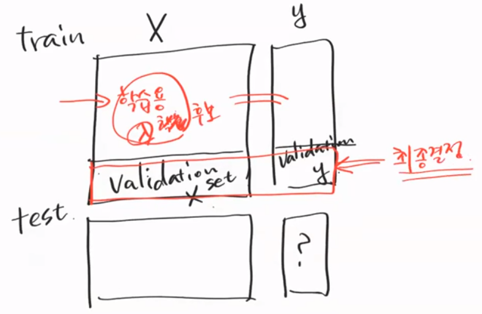
validation_split <- validation_split(mtcars, prop = 0.7)
validation_split## # Validation Set Split (0.7/0.3)
## # A tibble: 1 x 2
## splits id
## <list> <chr>
## 1 <split [22/10]> validation# 실제 내용을 보려면,
validation_split$splits[[1]]$in_id## [1] 12 6 5 19 27 2 4 28 18 21 13 20 1 8 16 14 9 22 26 11 17 7head(validation_split$splits[[1]]$in_id)## [1] 12 6 5 19 27 2tune_spec <- linear_reg(penalty = tune(),
mixture = 0) %>%
set_engine("glmnet")
# 0~1까지 람다를 균등하게 50개 뽑기
param_grid <- grid_regular(penalty(), levels = 50)
#mixture(),
#levels = list(penalty =100,
#mixture = 10))
param_grid## # A tibble: 50 x 1
## penalty
## <dbl>
## 1 1 e-10
## 2 1.60e-10
## 3 2.56e-10
## 4 4.09e-10
## 5 6.55e-10
## 6 1.05e- 9
## 7 1.68e- 9
## 8 2.68e- 9
## 9 4.29e- 9
## 10 6.87e- 9
## # … with 40 more rowsworkflow <- workflow() %>%
add_model(tune_spec) %>%
add_formula(mpg ~ .)library(tictoc)
doParallel::registerDoParallel()
tic()
tune_result <- workflow %>%
tune_grid(validation_split,
grid = param_grid,
metrics = metric_set(rmse))
toc()## 0.771 sec elapsedtune_result %>%
collect_metrics()## # A tibble: 50 x 7
## penalty .metric .estimator mean n std_err .config
## <dbl> <chr> <chr> <dbl> <int> <dbl> <chr>
## 1 1 e-10 rmse standard 3.83 1 NA Preprocessor1_Model01
## 2 1.60e-10 rmse standard 3.83 1 NA Preprocessor1_Model02
## 3 2.56e-10 rmse standard 3.83 1 NA Preprocessor1_Model03
## 4 4.09e-10 rmse standard 3.83 1 NA Preprocessor1_Model04
## 5 6.55e-10 rmse standard 3.83 1 NA Preprocessor1_Model05
## 6 1.05e- 9 rmse standard 3.83 1 NA Preprocessor1_Model06
## 7 1.68e- 9 rmse standard 3.83 1 NA Preprocessor1_Model07
## 8 2.68e- 9 rmse standard 3.83 1 NA Preprocessor1_Model08
## 9 4.29e- 9 rmse standard 3.83 1 NA Preprocessor1_Model09
## 10 6.87e- 9 rmse standard 3.83 1 NA Preprocessor1_Model10
## # … with 40 more rowstune_best <- tune_result %>% select_best(metric = "rmse")
tune_best$penalty## [1] 1# tune_best$mixture
tune_result %>% show_best()## # A tibble: 5 x 7
## penalty .metric .estimator mean n std_err .config
## <dbl> <chr> <chr> <dbl> <int> <dbl> <chr>
## 1 1 e+ 0 rmse standard 3.54 1 NA Preprocessor1_Model50
## 2 6.25e- 1 rmse standard 3.77 1 NA Preprocessor1_Model49
## 3 1 e-10 rmse standard 3.83 1 NA Preprocessor1_Model01
## 4 1.60e-10 rmse standard 3.83 1 NA Preprocessor1_Model02
## 5 2.56e-10 rmse standard 3.83 1 NA Preprocessor1_Model03knitr::include_graphics("lec6-4.png")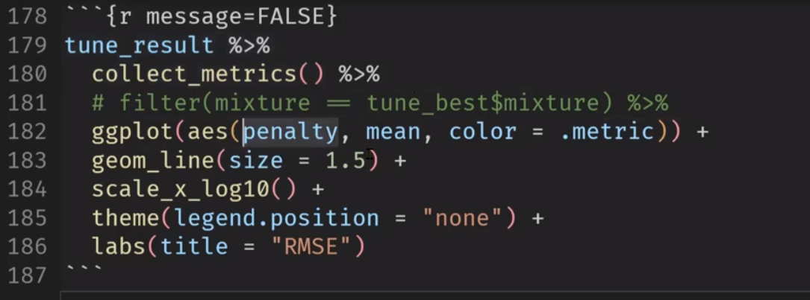
knitr::include_graphics("lec6-5.png")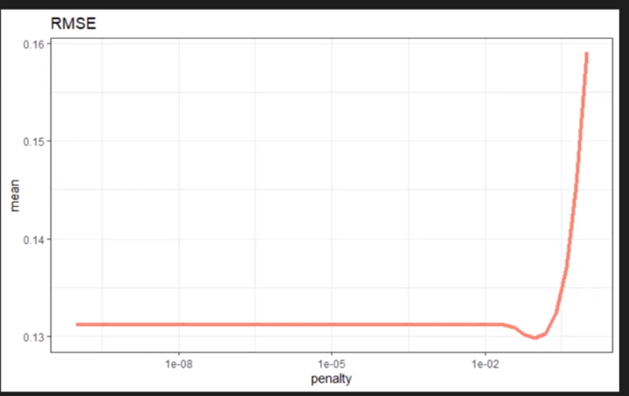
knitr::include_graphics("lec6-6.png")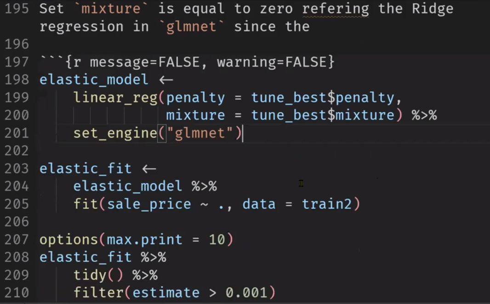
knitr::include_graphics("lec6-7.png")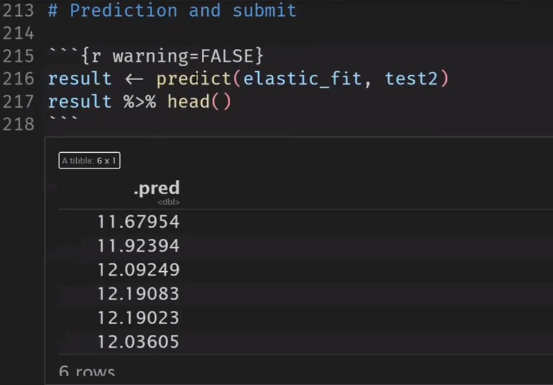
knitr::include_graphics("lec6-8.png")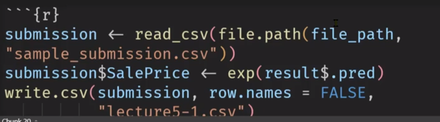
knitr::include_graphics("lec6-9.png")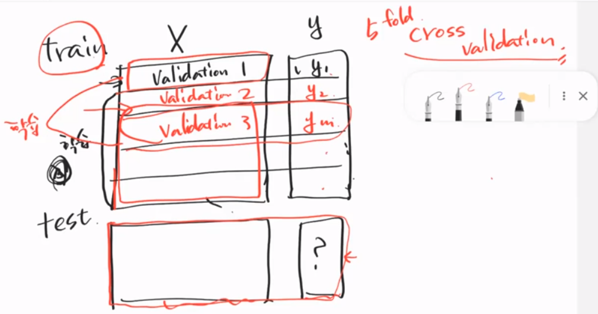
knitr::include_graphics("lec6-10.png")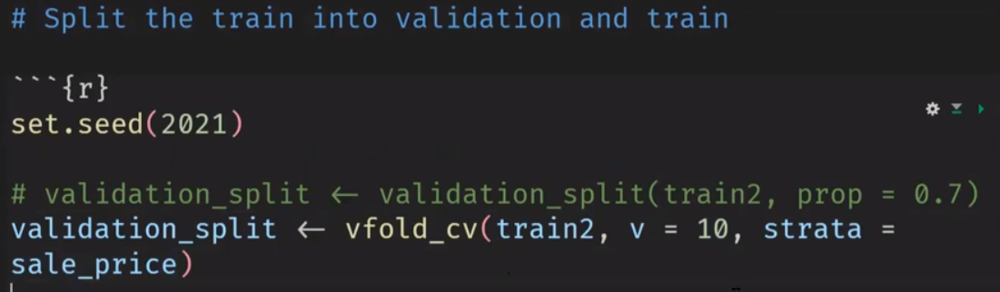
knitr::include_graphics("lec6-11.png")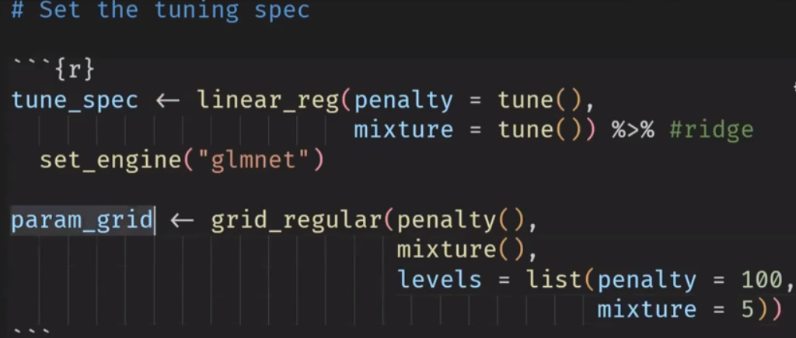
knitr::include_graphics("lec6-12.png")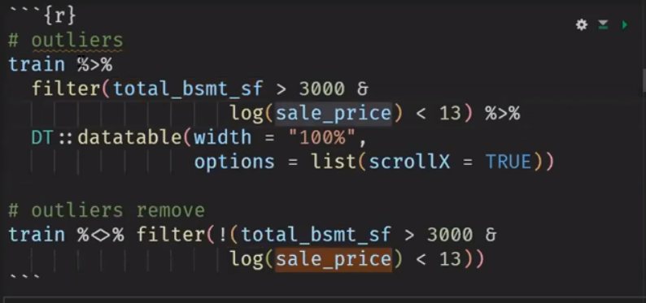
knitr::include_graphics("lec6-13.png")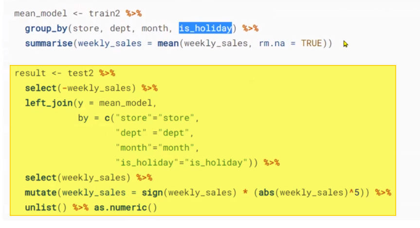